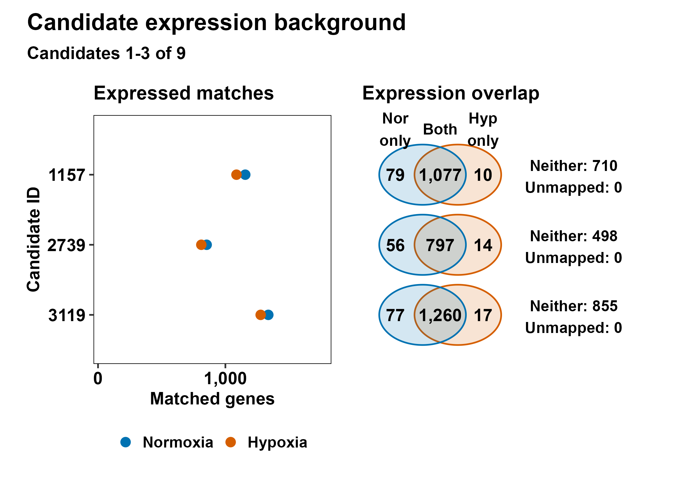
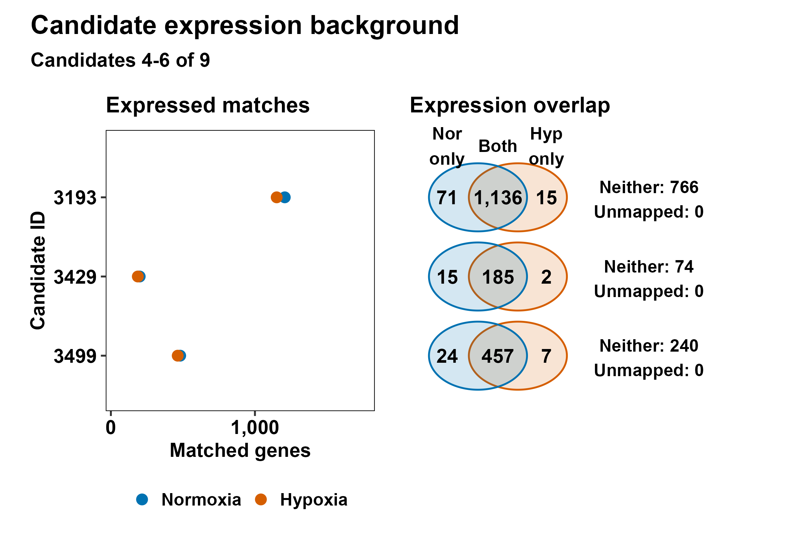
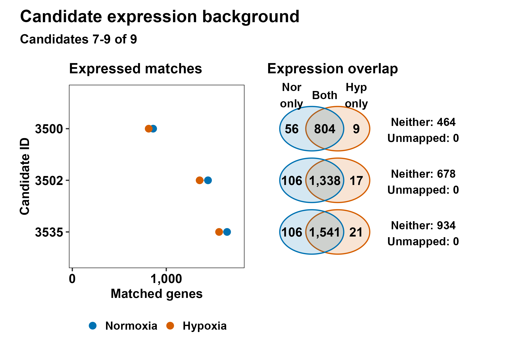
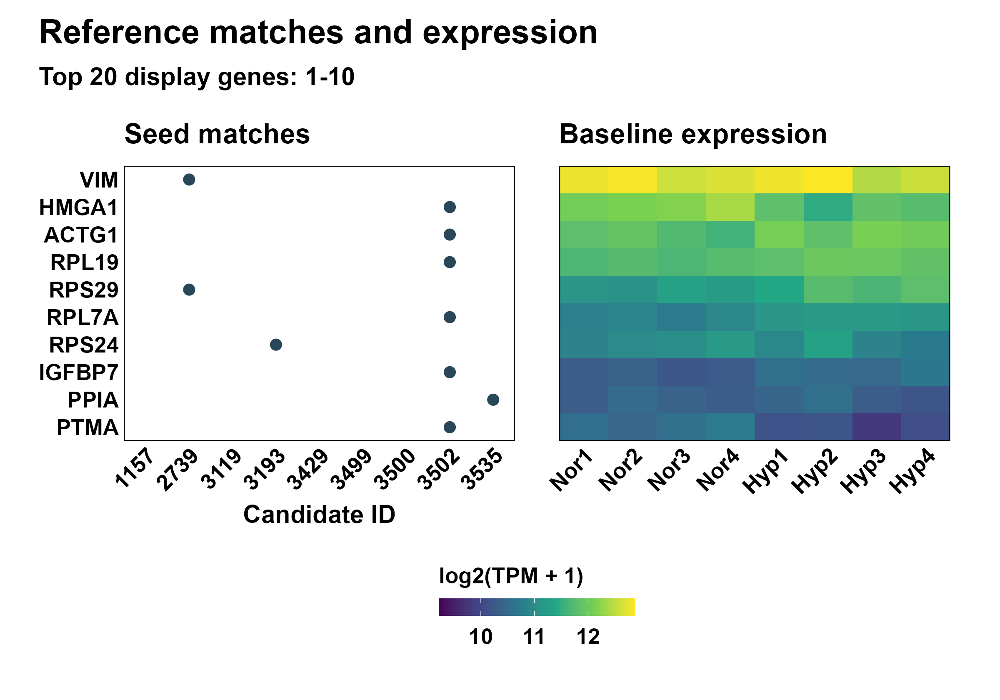
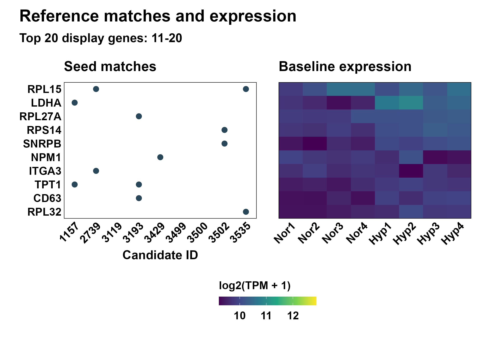

All eight untreated vessels retained. Expression annotation does not alter candidate ranking. Seed matches do not demonstrate experimental off-target effects.
Unique mapped non-target genes in the union of positive guide seed matches; mean TPM across all eight descending, symbol then numeric Entrez tie-break. No DE/FDR/direction filter.
Counts exact; circle areas schematic, not proportional; neither is below detection criterion in both states, not zero expression; unmapped is unknown.
log2(TPM+1), no row standardization; same gene order and color limits across pages; top20 are display only, full matches retained.
Current run candidates; seed mode recorded separately. Imported historical matches are not a new sequence screen.




